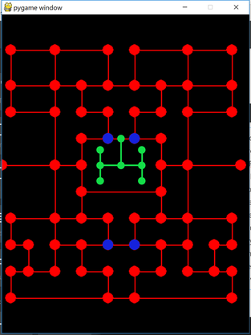

... Pacman Code ...
... Pacman Code ...
Section 14: Restricting Movement and Other Things
Setup
Right now all of the nodes are connected together which means that Pacman and the ghost can visit each and every node whenever they want. However, we need to restrict the movement of Pacman and the ghost when it comes to certain nodes and at certain times. For example, Pacman can never enter the ghost's home nodes, so we'll need to tell him that those nodes are off limits somehow. The ghost also shouldn't be allowed to enter the home nodes unless he is in SPAWN mode. There are also some nodes that only allow one-way movement for the ghosts. Those are represented by the blue nodes in the image on the right. When a ghost enters these nodes, he is not allowed to move in the UP direction. These nodes have no effect on Pacman. Some nodes also have speed effects on the ghosts. Well, actually the only nodes that have speed effects on the ghosts are the portal nodes. Whenever a ghost is moving towards or away from a portal node, then the ghost should be moving at 50% of this max speed. It's a great way for Pacman to escape if the ghost is following close behind him. Speaking of slowing down, whenever Pacman is eating pellets his speed is decreased a bit as well. If he isn't eating pellets then he can move at his max speed, but when he eats pellets he moves slightly slower. I think that's enough stuff to tackle for this section. Once we're finished with this section we should finally be able to add the other three ghosts.
Restrict Home Entrance
Modify the constants.py file
Since the nodes that we need to use to restrict movement are maze dependent we'll add them to the MAZEDATA dictionary. I know that we're still hard-coding them in, and we'll fix that later. But for now, it's fine. The "home" is the node that defines the ghost home entrance. We'll also add in the four nodes that prevent the ghosts from moving UP. These are the four blue nodes in the image from before.
MAZEDATA[0]["home"] = (216, 272)
MAZEDATA[0]["restrictUp"] = {0:(12*WIDTH, 14*HEIGHT), 1:(15*WIDTH, 14*HEIGHT), 2:(12*WIDTH, 26*HEIGHT), 3:(15*WIDTH, 26*HEIGHT)}
Modify the nodes.py file
Modify the Node __init__ method
def __init__(self, level):
...
self.home = False
Modify the moveHomeNodes method
def moveHomeNodes(self):
...
for node in self.homeList:
...
if node.position.toTuple() == MAZEDATA[self.level]["home"]:
node.home = True
Modify the pacman.py file
Modify the moveByKey method
When Pacman overshoots a node we just need to add the check to make sure that the node isn't the ghost's home node. If it is then any key presses from the player won't register. So Pacman is now forever prevented from moving into the ghost's home.
def moveByKey(self):
if self.direction is STOP:
...
else:
...
if self.overshotTarget():
...
if self.node.neighbors[direction] is not None and not self.node.home:
...
Restrict the Ghost UP Movement
Conclusion
File Structure
- Pacman
- constants.py
- entities.py
- gamecontrol.py
- ghosts.py
- home.txt
- maze1.txt
- nodes.py
- pacman.py
- pellets.py
- stacks.py
- vectors.py